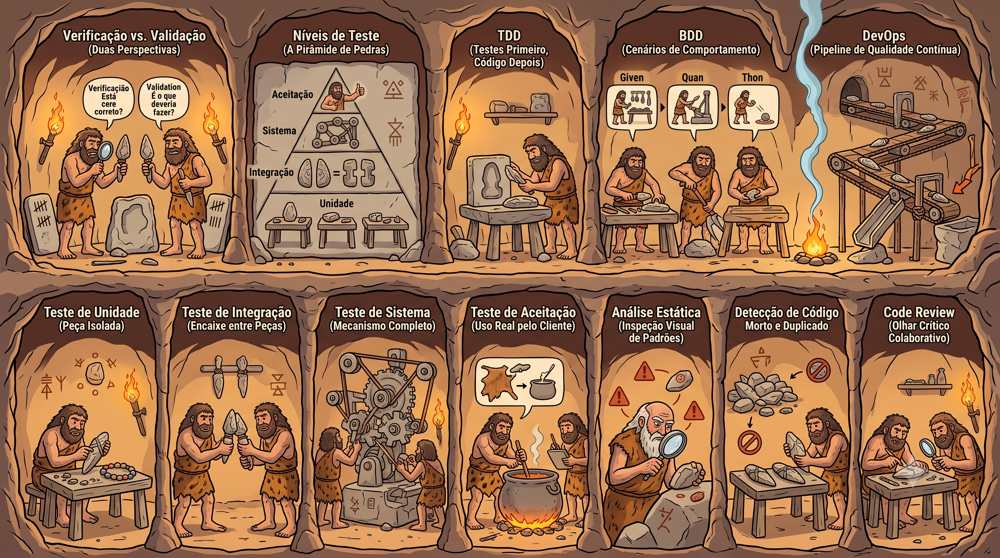

Da ferramenta mal lascada para a peça que a tribo confia de olhos fechados. Cada nicho da caverna é uma prática viva de QA — da verificação à revisão colaborativa, cada uma no seu lugar dentro do ciclo.
Passe o mouse e clique em qualquer nicho da caverna — 12 práticas de QA numa imagem só.
